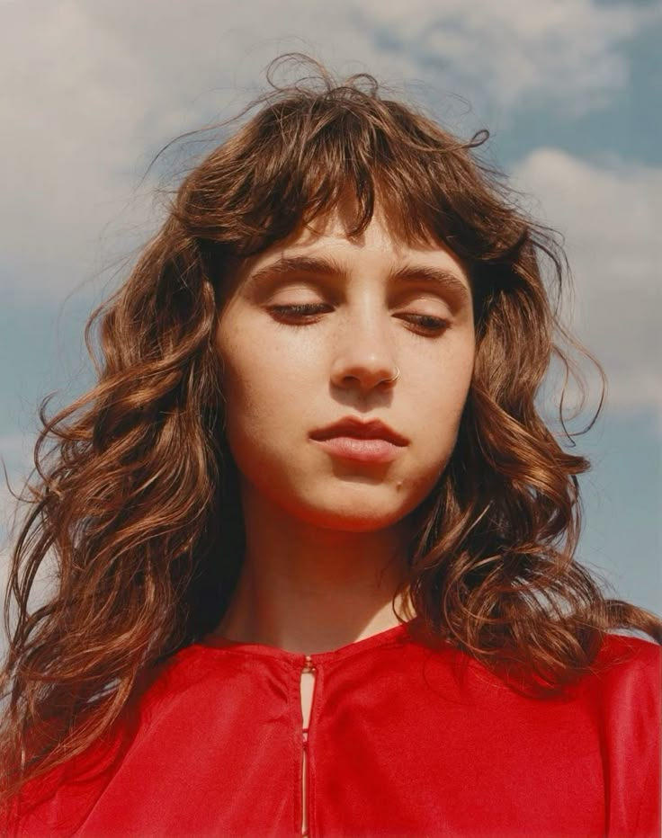

Clairo: Music For Quiet Moods

Clairo for Crack Magazine, july 2024
Clairo (real name Claire Elizabeth Cottrill) is an American singer-songwriter born in Atlanta, Georgia, in 1998. She gained widespread attention in 2017 after her lo-fi track “Pretty Girl” went viral on YouTube.
Timeline of Clairo's life
- 18.08.1998 - Clairo was born in Atlanta, Georgia, USA
- 2017 - Released her first song "Pretty Girl" on YouTube
- 2018 - Her debut EP "Diarry 001" was released
- 2019 - Clairo came out with her first studio album "Immunity"
- 2021 - Released second album "Sling"
Subscribe for More